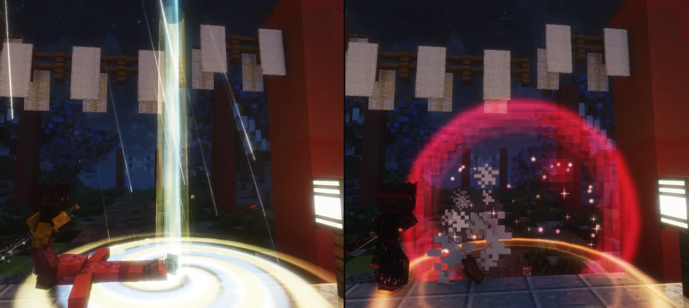
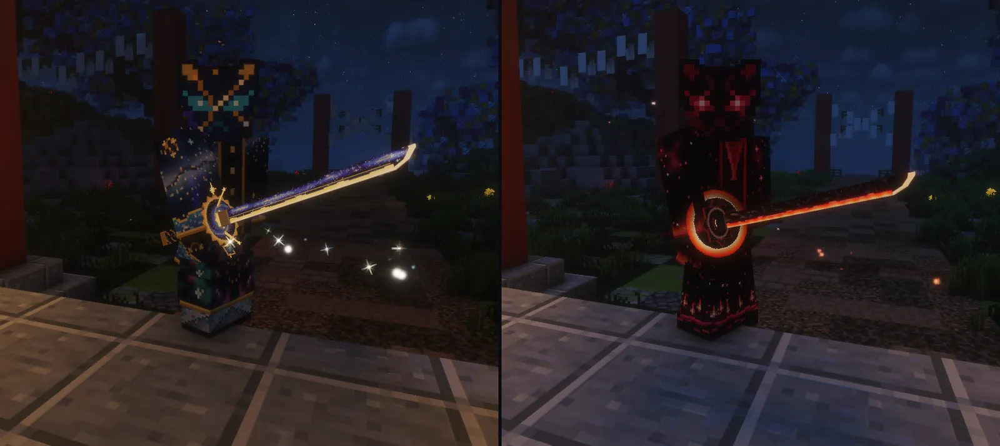
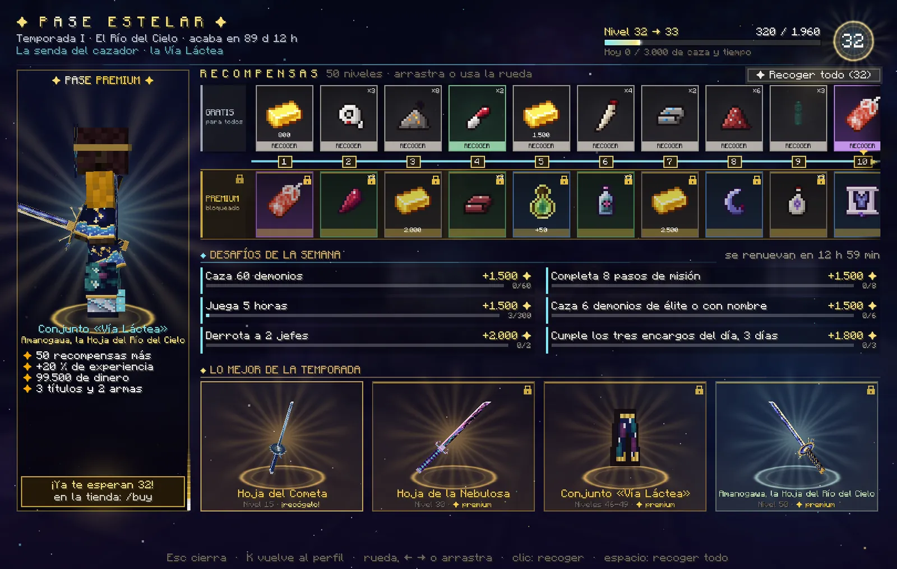
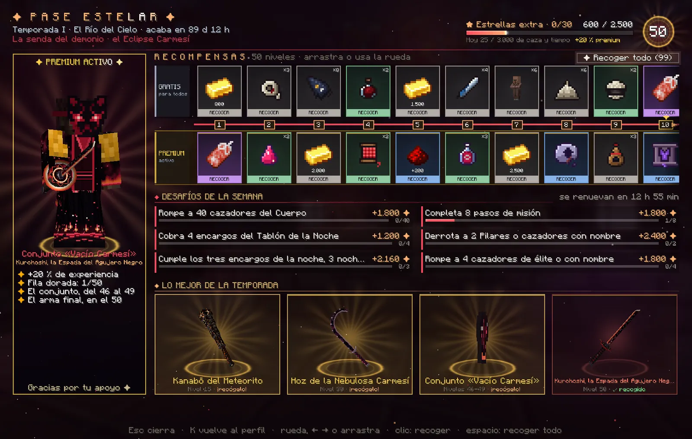
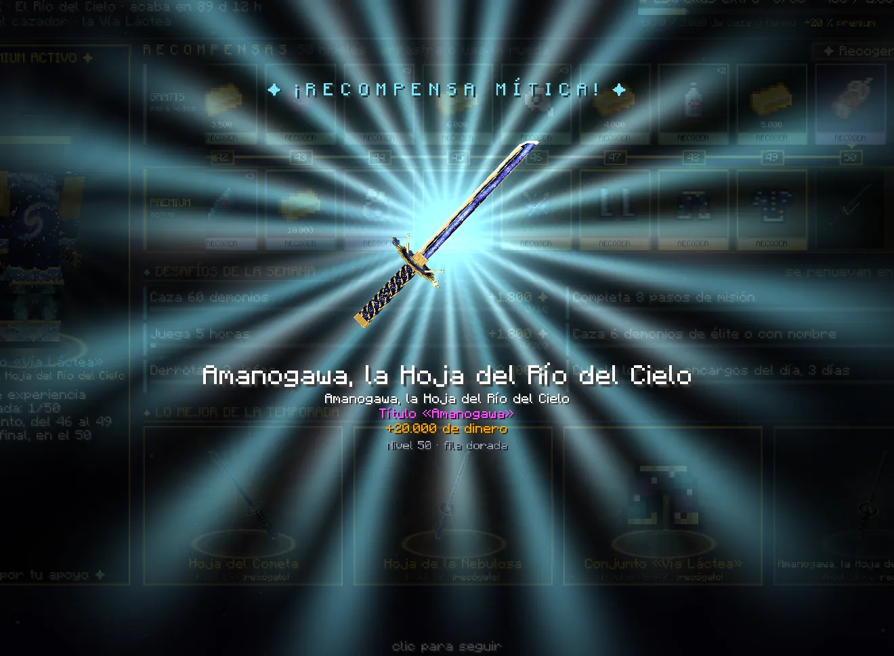

El Pase Estelar#
Temporada I, «El Río del Cielo»: 50 niveles que se suben jugando, con una recompensa gratis en cada uno y otra dorada para quien tiene el Pase Premium. Lo abres con K → ✦ Pase o con /pase.
La temporada I: «El Río del Cielo»#
25 de octubre de 2026 Empieza la temporada.
22 de enero de 2027 Último día para ganar experiencia y para conseguir el Pase Premium.
29 de enero de 2027 Último día para recoger lo que ganaste. Después, el pase se cierra.
Las fechas van en hora de Madrid. Lo que ya hayas recogido es tuyo para siempre: qué pasa al acabar.
Cómo funciona#
- 50 niveles. En cada uno hay dos recompensas: la de la fila gratis, para todos, y la de la fila dorada, para quien tiene el Pase Premium.
- Cada bando, la suya. El cazador recorre la Vía Láctea (azul y oro) y el demonio, el Eclipse Carmesí (negro y sangre). Valen lo mismo, pero cada uno recibe lo de su bando: vendas del Cuerpo o de mortaja, méritos o sangre, la Hoja del Cometa o el Kanabō del Meteorito…
- Lo que recoges cuenta para los dos bandos. Si cambias de bando, los niveles que ya recogiste no se vuelven a cobrar con lo del otro; tus títulos del pase pasan solos a los de tu nuevo bando.
- Pasado el nivel 50, cada 2.500 de experiencia es una estrella extra: 1.500 de dinero (3.000 más con el Pase Premium), hasta 30 por temporada. Se recogen en la carta ★ EXTRA, al final de la pista.
Cómo se sube#
Se gana experiencia del pase jugando. El nivel 1 pide 1.000 y cada nivel, 30 más que el anterior (el 50, 2.470): la temporada entera son 86.750.
| Qué haces | Experiencia |
|---|---|
| Un paso de misión (de la historia, de un encargo o de un susurro) | 100 |
| Terminar una misión | 300 |
| Cobrar un encargo del día (del Cuerpo o de la noche) | 120 |
| Los tres encargos del día | 250 más |
| Subir de rango en el Cuerpo, o que tu sangre madure | 700 |
| Tu primera entrada del día | 200 |
| El tiro gratis de la Caja del Cuartel | 30 |
| Demonio: cobrar un encargo del Tablón de la Noche · el de la semana | 30 · 150 |
| Cazador: cazar un demonio · uno con nombre de la noche · un jefe (las Lunas y los jefes de las cacerías, de la Luna de Sangre y de las misiones) | 6 · 40 · 250 |
| Demonio: romper a un cazador del Cuerpo · uno de élite · un cazador con nombre o un Pilar | 6 · 40 · 250 |
| Derrotar a un jugador del otro bando | 120 |
| Cada 5 minutos de juego (sin estar AFK) | 25 |
| Demonio: devorar a un humano · recoger un loto de sangre | 10 · 5 |
| Un plato de los oficios del Mercado con 70 o más · un recado entregado | 8 |
| Cumplir un desafío de la semana | de 800 a 2.000 |
- Lo que se repite (cazar, el PvP, el tiempo de juego, devorar, los lotos y los oficios) cuenta hasta 3.000 al día: lo que pasa de ahí se pierde, y a las 0:00 (hora de Madrid) vuelve a contar. La pantalla te dice cuánto llevas: «Hoy 1.240 / 3.000 de caza y tiempo». Lo demás no tiene tope.
- Un paso o una misión solo dan experiencia la primera vez que los haces.
- «Bien comido»: si otro jugador te cocina un plato en el Mercado de la Ciudadela, durante un rato ganas un 10 % más de experiencia del pase.
- El Pase Premium suma un 20 % a toda la experiencia, también a la de los desafíos.
- El PvP solo cuenta contra jugadores del otro bando y fuera del dojo; no entre dos del mismo clan ni desde la misma conexión, y la misma pareja cuenta una vez cada 6 horas.
- No cuentan las criaturas de un encuentro de misión, lo que invoca otro jugador ni los aliados.
Los desafíos de la semana#
Seis cada semana, de lunes a domingo: se renuevan el lunes a las 0:00 (hora de Madrid) y son los mismos para todos los de tu bando. Los dos primeros (cazar y los pasos de misión) salen siempre; los otros cuatro cambian cada semana. Cada uno, al cumplirlo, da su experiencia de una vez y el chat te lo dice: «✦ Desafío de la semana cumplido: …».
| Desafío | Cazador | Demonio | Experiencia |
|---|---|---|---|
| Cazar (siempre) | 60 demonios | 40 cazadores del Cuerpo | 1.500 |
| Pasos de misión (siempre) | 8 | 8 | 1.500 |
| De élite o con nombre | 6 demonios | 4 cazadores | 1.500 |
| Jefes | 2 | 2 Pilares o cazadores con nombre | 2.000 |
| Los tres encargos del día | 3 días | 3 noches | 1.800 |
| Jugadores del otro bando (distintos) | 3 demonios | 3 cazadores | 2.000 |
| Jugar | 5 horas | 5 horas | 1.500 |
| Viajar | 6 veces en cuervo | 6 veces con la biwa | 800 |
| Terminar | una misión o un encargo | una misión o un susurro | 1.500 |
| Abrir la Caja del Cuartel | 4 días | — | 1.000 |
| Devorar humanos | — | 10 | 1.200 |
| Recoger lotos de sangre | — | 15 | 1.000 |
| Cobrar encargos del Tablón de la Noche | — | 4 | 1.000 |
Con el Pase Premium, un 20 % más (la pantalla ya te enseña lo que vas a cobrar). Si cambias de bando a mitad de semana, tienes los del otro bando y empiezan de cero.
Las recompensas#
- Fila gratis, para todos: unos 59.300 de dinero en la temporada, materiales y botica de tu bando, tres decoraciones para tu casa, tres títulos y, en el nivel 15, tu primera arma del pase.
- Fila dorada, con el Pase Premium: una recompensa en cada nivel. Unos 99.500 de dinero, lo raro de tu bando (planos de la Luna o pergaminos de los Kizuki, esquirlas, lágrimas de la Luna de Sangre o lotos negros, núcleos o viales), cuatro accesorios (dos legendarios), méritos o sangre, el Torii del Santuario, una tirada de tu caja, tres títulos, las armas de los niveles 30 y 50 y el conjunto estelar, del 46 al 49.
Los niveles que más importan (cazador / demonio):
| Nivel | Fila gratis | Fila dorada |
|---|---|---|
| 1 | 800 | Título «Portador Estelar» / «Portador del Eclipse» y 1.500 |
| 10 | Título «Mirada al Cielo» / «Ojos de la Luna Roja» y 2.000 | Plano raro: haori del Cazador de Lunas / pergamino raro: kimono de los Doce |
| 13 | Fūrin de Cristal / Chōchin del Oni | Omamori de la Luna Menguante / Amuleto de la Luna Roja |
| 15 | Hoja del Cometa / Kanabō del Meteorito | 115 méritos / 400 de sangre, y 4.000 |
| 18 | 1.500 | Netsuke de la grulla / del murciélago |
| 20 | Kakejiku del Dragón / de la Luna de Sangre, y 2.500 | Lágrima de la Luna de Sangre / loto negro, y 5.000 |
| 25 | 3.000 y un núcleo de sangre / un vial de sangre marechi | Título «Guardián de la Vía Láctea» / «Señor del Vacío», y 173 méritos / 600 de sangre |
| 30 | Título «Cazador de Cometas» / «Devorador de Cometas» y 4.000 | Hoja de la Nebulosa / Hoz de la Nebulosa Carmesí |
| 35 | Tōrō de Piedra | Omamori del Sol Naciente / Ojo de la Luna Superior (legendarios) |
| 40 | 5.000 | Una tirada de tu caja: un lingote de metal nichirin premium / un vial de Sangre Premium |
| 41 | Botica | 230 méritos / 800 de sangre |
| 44 | Botica | Netsuke del Dragón de Hierro / del Orochi (legendarios) |
| 45 | 6.000 | Torii del Santuario y 12.000 |
| 46 a 49 | Botica y dinero | El conjunto estelar, una pieza por nivel |
| 50 | Título «Viajero del Río del Cielo» / «Errante del Eclipse» y 10.000 | Amanogawa / Kurohoshi, su título y 20.000 |
Lo demás son materiales, botica y dinero: en la pantalla del pase, pasa el ratón por cada carta para ver lo que trae. Las decoraciones son las de la tienda de Tokio, para tu casa; la tirada del nivel 40 se abre en tu caja (la Premium o la de Sangre).
Las armas del pase#
La del nivel 15 es de la fila gratis; las de los niveles 30 y 50, de la dorada.
| Arma | Su golpe | Lo suyo |
|---|---|---|
| Hoja del Cometa · cazador, nivel 15 | como una nichirin | corta con la cola de un cometa; al rematar, una estrella fugaz atraviesa a tu presa |
| Hoja de la Nebulosa · cazador, nivel 30 | su tajo pega 10 a criaturas y jefes | corta con polvo de estrellas; al rematar, nace una estrella |
| Amanogawa, la Hoja del Río del Cielo · cazador, nivel 50 | su tajo pega 11 a criaturas y jefes | corta con la Vía Láctea; al rematar, cae una lluvia de estrellas y se abre la galaxia |
| Kanabō del Meteorito · demonio, nivel 15 | 11 y lento, como el Kanabō del Oni; guardia, sin parada | a los cazadores del Cuerpo les aplasta (lentos 1,5 s) y alcanza a tres; al rematar, cae un meteorito |
| Hoz de la Nebulosa Carmesí · demonio, nivel 30 | su tajo pega 10 a criaturas y jefes; guardia y parada | a los cazadores del Cuerpo, cada tajo les desangra 3 s y te devuelve medio corazón; al rematar, nace una nebulosa de sangre |
| Kurohoshi, la Espada del Agujero Negro · demonio, nivel 50 | katana: su tajo pega 11 a criaturas y jefes; guardia y parada | contra los cazadores del Cuerpo, cada tajo te cura medio corazón y, al tercero seguido, el horizonte atrae a los de cerca y les hiere; al rematar, un agujero negro se lo traga y estalla en una supernova carmesí |
- Las tres hojas del cazador toman tu respiración: lanzan las formas de la que tengas activa, como tu hoja personal, y llevan Reparación.
- Contra un jugador, y en las formas y las habilidades de Epic Fight, las de la fila dorada pegan como un arma normal: la nichirin, o un arma de sangre (la hoz, 7,5; Kurohoshi, 8). Lo que hacen las del demonio contra los cazadores del Cuerpo, solo contra los que no son jugadores ni jefes.
- Las del demonio solo obedecen a un demonio, como las armas de sangre: con ellas en la mano no hay garras, cubriéndote no salen artes y el endurecimiento de Hozuki las templa.
- Todas brillan de noche, tienen su sonido y su estela, y rematan con su escena.


El conjunto estelar#
Una pieza en cada nivel del 46 al 49 de la fila dorada. Es el mejor conjunto del juego, y no se forja ni se vende.
| Nivel | Cazador: la Vía Láctea | Demonio: el Vacío Carmesí |
|---|---|---|
| 46 | Máscara de la Constelación | Máscara del Horizonte |
| 47 | Polainas del Cometa | Vendas del Meteoro Rojo |
| 48 | Pantalón de las Nebulosas | Hakama de las Estrellas Muertas |
| 49 | Haori de la Vía Láctea | Haori del Vacío Carmesí |
- Con las cuatro piezas: 14 de armadura y 12 de dureza (el conjunto legendario: 10 y 8), un 23 % menos de daño de los enemigos del otro bando que no son jugadores, 30 % de firmeza y +10 % de velocidad (las polainas o las vendas, además, un 40 % menos de daño por caída).
- Contra las técnicas de un jugador del otro bando (sus formas o sus artes), el 18 %: el tope, con el conjunto solo y sin el amuleto legendario (cómo funciona).
- Con dos piezas: ves de noche y ves brillar a los demonios cercanos (el demonio: a los cazadores del Cuerpo, y tiene menos hambre).
- Con las cuatro: golpeas un 10 % más fuerte a los jefes (el demonio, a los cazadores de élite y con nombre); la Estrella fugaz: un golpe mortal te deja en pie con un escudo de 10, cada 5 minutos (el demonio, la Sangre de Luna Superior); y la Lluvia de estrellas (el demonio, el Meteorito carmesí): cada 20 segundos, tu golpe a un enemigo hace caer una estrella del cielo que le quita 6 (nunca lo remata).
- Como el resto del equipo, la defensa y las habilidades valen contra los enemigos que no son jugadores, y nunca en el dojo.
- Con el conjunto entero, su aura: estrellas que giran a tu alrededor, y más con el arma del pase en la mano.


El Pase Premium#
- Se consigue en la tienda (en el juego,
/buy), con tu nombre de jugador exacto y estando conectado. Llega en unos minutos: su título en pantalla, una celebración a tu alrededor y un anuncio a todo el servidor. - Te da la fila dorada entera (una recompensa más en cada nivel), un 20 % más de experiencia en todo y, pasado el 50, 3.000 más por cada estrella extra.
- Si lo consigues a mitad de temporada, lo dorado de todos los niveles que ya pasaste te espera para recogerlo al momento: el chat y la pantalla te dicen cuántas recompensas son.
- Es de esta temporada: vale hasta que acabe la temporada I.
- Sin él, al subir de nivel el chat te recuerda lo que te habrías llevado con el Premium.
La pantalla y cómo se recoge#




- Arriba: la temporada y lo que le queda, tu senda, tu nivel con su barra y lo que llevas hoy de lo que se repite.
- A la izquierda, el Pase Premium: tú mismo vestido con el conjunto estelar y el arma del nivel 50, girando (es un
probador: no te pone nada de verdad), y lo que trae. Sin el Premium, cuántas recompensas doradas te esperan ya y dónde se
consigue: un clic te deja
/buyescrito en el chat. - La pista: los 50 niveles en dos filas, la gratis arriba y la dorada abajo, con tu progreso entre las dos. Se mueve con la rueda del ratón, con Left Right o arrastrando. Cada carta va del color de lo que da (común, poco común, rara, épica, legendaria o mítica) y lo grande se ve en 3D. Lo que ya puedes recoger late y pone «RECOGER»; lo recogido lleva su ✓ y lo dorado sin el Premium, su candado. Pasa el ratón por una carta para ver lo que trae y lo que te falta.
- Debajo, los desafíos de la semana, con su barra y su experiencia.
- «Lo mejor de la temporada»: si tu pantalla tiene sitio (con la interfaz pequeña), las tres armas y el conjunto girando sobre su pedestal; un clic te lleva a su nivel en la pista.
- Esc cierra y K te devuelve a la K.
Recoger#
- Haz clic en una carta que late para recogerla, o pulsa «Recoger todo» (o Space) para llevarte de una vez todo lo que tengas listo en las dos filas.
- Cada recompensa pide sitio para todo lo que trae. Si no te cabe, no se gasta nada («Haz sitio en el inventario: hacen falta…») y «Recoger todo» se para ahí, con lo de antes ya recogido.
- Lo grande (un título, la tirada de tu caja, un accesorio legendario, un arma, una pieza del conjunto) se revela en grande en la pantalla (haz clic para seguir) y lo celebra una constelación a tu alrededor. Las armas y las piezas del conjunto, además, se anuncian a todo el servidor.


- El dinero va a tu banco; los méritos y la sangre, a tu rango.
- Las armas, el conjunto y los accesorios van ligados: no se tiran ni se venden y vuelven contigo al morir.
- Si tienes algo por recoger, la pestaña ✦ Pase de la K lo dice con una estrella y el número.
El aviso de experiencia#
- Cada vez que ganas experiencia del pase sale una tarjeta pequeña a la derecha de la pantalla (debajo de la misión que sigues): «✦ +120», de dónde viene y la barra de tu nivel. En plena caza, lo que llega seguido se suma en la misma tarjeta.
- Al subir de nivel: el título grande «✦ NIVEL 18 ✦», su sonido y una línea en el chat con el botón [ Abrir el Pase ].
Cuando acaba la temporada#
- Al acabar el 22 de enero de 2027 ya no se gana experiencia ni se puede conseguir el Pase Premium.
- Tienes una semana más, hasta el 29 de enero, para recoger lo que ganaste (también las estrellas extra): un aviso en el chat te dice cuánto te queda por recoger y hasta qué día.
- Después, el pase se cierra. Lo que ya recogiste (las armas, el conjunto, los títulos, las decoraciones…) sigue siendo tuyo. Si llega otra temporada, empezará de cero y con su propio Pase Premium.